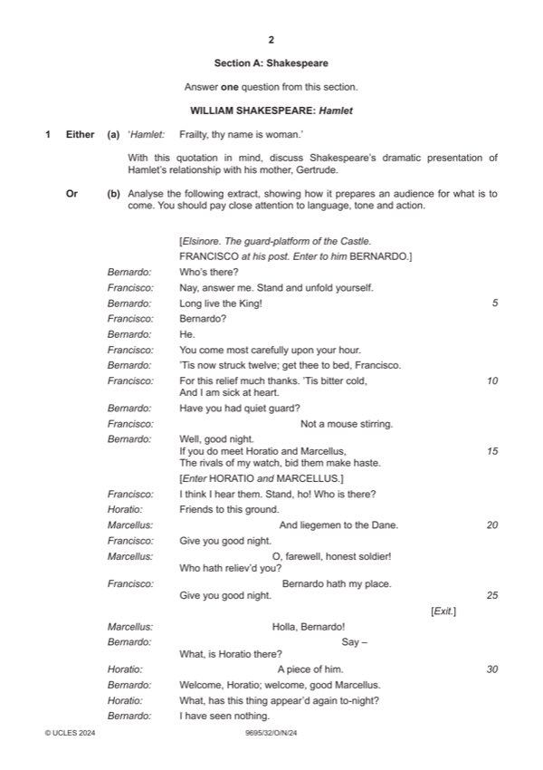

Question 1

Original paper page 2
Part 1(a) — solution
Answer: OR
‘Hamlet: Frailty thy name is woman.’ 25
With this quotation in mind, discuss Shakespeare’s dramatic
presentation of Hamlet’s relationship with his mother, Gertrude.
Mark according to the levels of response marking criteria.
OR
Mark points
- Correct result: OR
Part 1(b) — solution
Analyse the following extract, showing how it prepares an audience for 25
what is to come. You should pay close attention to language, tone and
action.
Mark according to the levels of response marking criteria.
WILLIAM SHAKESPEARE: The Merchant of Venice
EITHER
Mark points
- Include the ideas shown in the solution above.